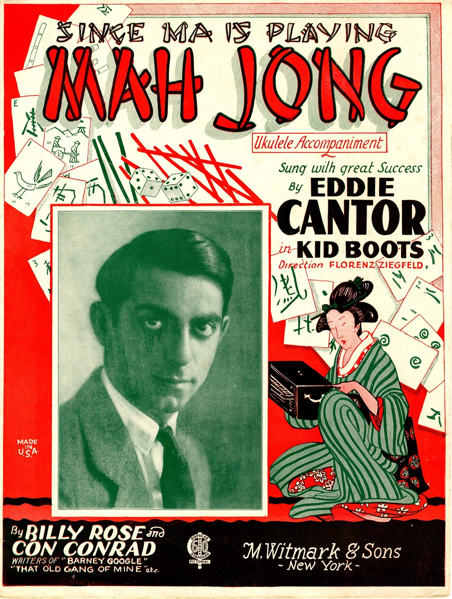
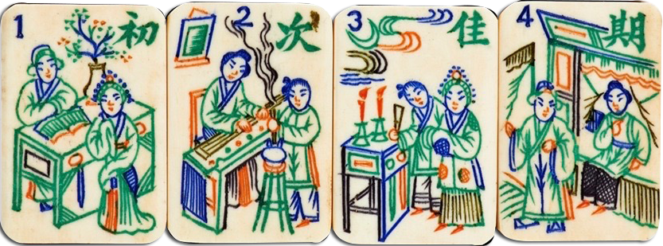

RECALLING
THE CRAZE
FOR A GAME
OF CHANCE
This illustrates not just the lengths to which a distraught Jewish mother might go to inflict guilt, but how much a staple mah-jongg was (and is) in Jewish-American life up there with flanken, seltzer and schmaltz (at least in my family).
A tough cut of meat, heavy on tendon and fat.
A type of highball drink containing seltzer (carbonated water), alcohol, and often fruit flavorings.
Rendered chicken or goose fat.
It is curious that this ancient Chinese table game, the invention of which is attributed to Confucius in 500 B.C. (yet the origin is really uncertain), would be such a smash among American Jews that it evolved into a Jewish game.
The craze, which began in the 1920s, was a novel form of entertainment for a new leisure class and paralleled a middle-class taste for Asian-style interior decoration as well as a “Jewish interest in Chinese food,” says Melissa Martens, the curator of Project Mah Jongg, an extensive exhibit opening at the Museum of Jewish Heritage on May 4 and continuing through December. It promises to be a distinctive cultural examination of the game and an opportunity to intimately engage with the ritualistic aspects of mah-jongg, which is enjoying a resurgence through mah-jongg social groups and on the Web (like online mah-jongg solitaire)
MAH-JONG IS A GAME OF CHANCE AND SKILL,
similar to gin rummy, in which each of four players is dealt either 13 or 16 pictographic tiles of different suits. The players then take turns drawing and discarding tiles, with a goal of making four or five combinations of tiles, or melds, and one pair, or head. It was a favorite among Catskill resort habitués and played incessantly by Eastern European immigrant Jewish women in the 1930s.
Eddie Cantor sang the Billy Rose and Con Conrad song “Since Ma Is Playing Mah Jong” that, through racially insensitive lyrics about the Chinese, satirized the compulsive game-playing that frustrated neglected husbands.
Also called “the game of a hundred intelligences,” “the gift of heaven,” and negatively during World War II, “the new yellow peril,” mah-jongg was introduced in the United States around 1920 by the American businessman Joseph P. Babcock, who had lived in China and was fascinated with the exotic world that mah-jongg represented.
He started importing sets en masse around 1922, at which time he simplified the game for an American audience through his book “Rules for Playing the Genuine Chinese Game Mah-Jongg.”
“The game delighted players with its beautifully adorned tiles, associations with other lands and mysterious rules,” Ms. Martens says. Marketers often used the game's cultural associations “to trigger fantasies and identities.”
The National Mah Jongg League was formed in 1937 by a group of German-Jewish women, inviting players to convene and standardize the rules. Today, Ms. Martens estimates this group has as many as 400,000 members.
The “Project Mah Jongg” exhibition, designed by Abbott Miller, a partner at Pentagram New York, will be in the 1,000-square-foot hexagonal gallery of the pyramidlike Museum of Jewish Heritage in Battery Park, and will include dozens of artifacts scorecards, aprons, packages, tiles chronicling both the commercial legacy and social history of the game.
“Design will dictate the visual experience,” she said, and Mr. Miller has already developed an overall scheme that conflates traditional Asian and Jewish cultural references, which he calls “part Chinese, part synagogue modern.”
The European interpretation and imitation of Chinese and other East Asian artistic traditions, especially in the decorative arts, garden design, architecture, literature, theatre, and music.
Nonetheless, as Woody Allen’s joke implies, there are inevitable connotations regarding mah-jongg that could lead to stereotyping. “We are very sensitive to anything that seems like a stereotype,” Ms. Martens said, “and will unpack it so not to raise it to kitsch.” She added that Mr. Miller was not leaning toward chinoiserie or “playing things for cute typology,” but was instead “streamlining” the major graphic elements, making them transcend their vernacular.
“For me,” Mr. Miller said, “it’s a great meeting ground between the tile-based world of mah-jongg, but I also see in its forms the narrow stalks and segmentation of bamboo, as well as the rounded forms you can find in ’60s and ’70s synagogue architecture.”
For Ms. Martens, the interactive “Project Mah Jongg” exhibition is meant to attract a mixed audience, but she speculates that it will be largely female, both older and younger people who have experienced the game. Perhaps it will entice an entirely new generation, weary of video games, to become mah-jongg enthusiasts.